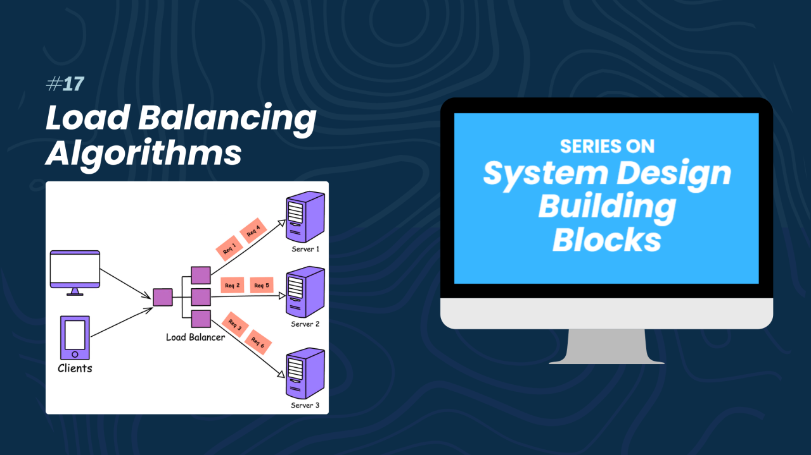
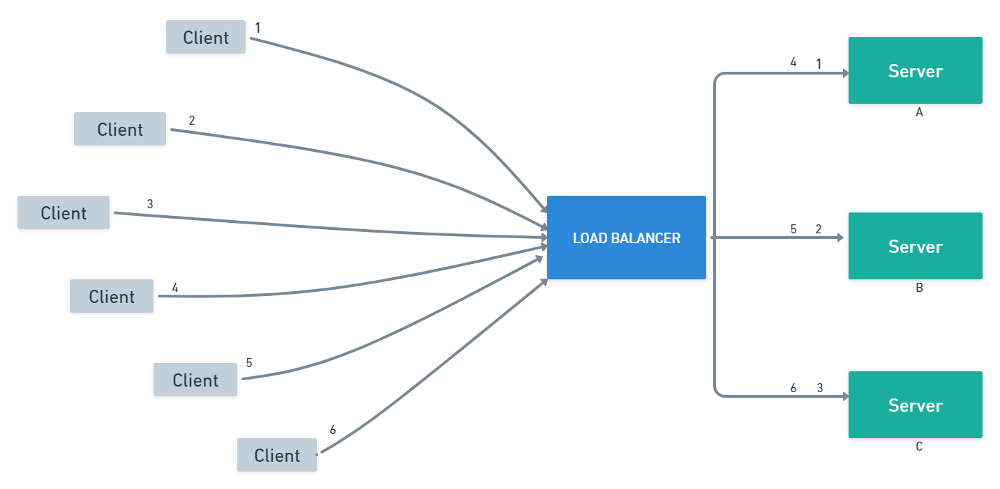
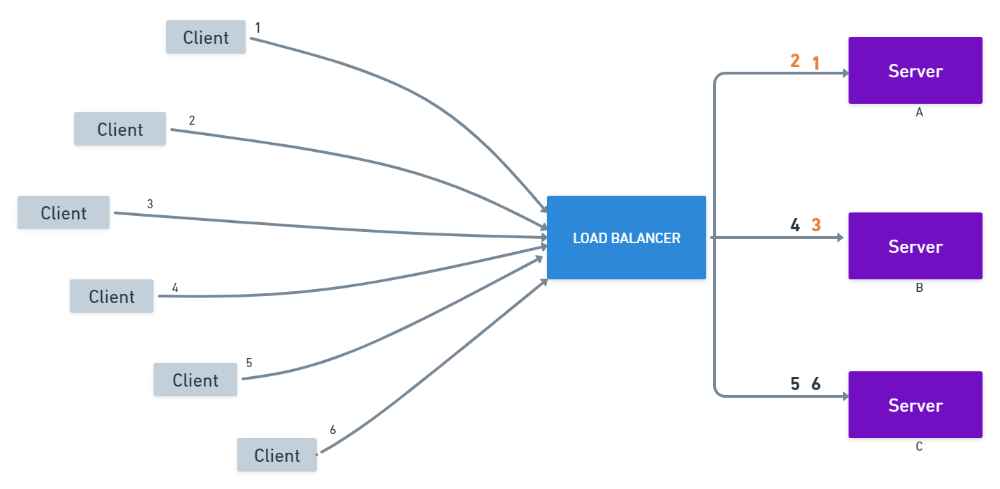
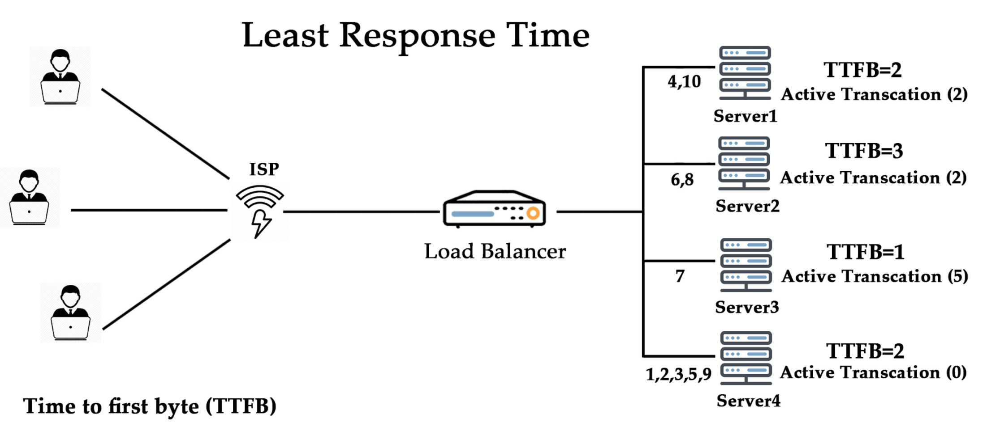
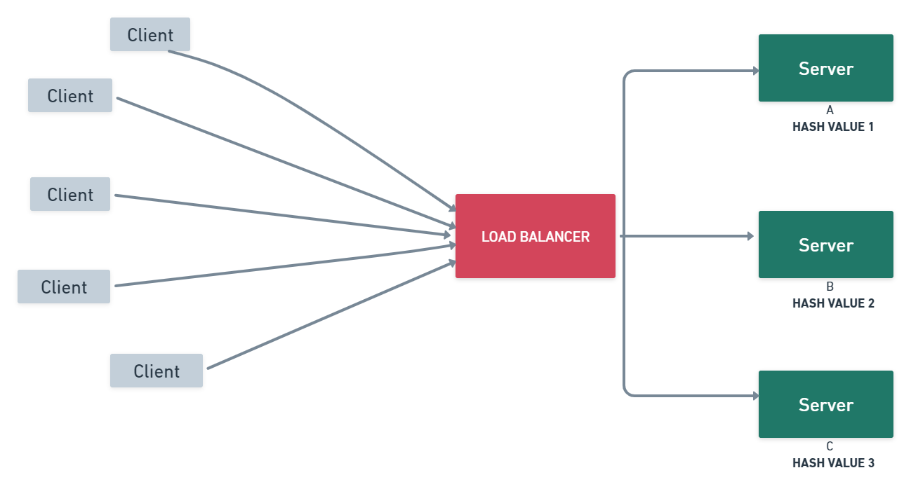

Load Balancing Algorithms with Real-World Examples
Ashmita Pandey · · System Design · Infrastructure

Hi everyone 👋
When an application grows and serves thousands or even millions of users, managing the traffic effectively becomes crucial. This is where load balancing comes in. Load balancing is the process of distributing incoming network traffic evenly across multiple servers. By doing this, no single server gets overloaded, ensuring smooth performance, reduced waiting times, and higher availability even when a server fails.
In this article, we’ll explore five important load balancing algorithms using clear examples, along with their advantages, disadvantages, and when to use each one.
What is Load Balancing?
Imagine a restaurant on a busy evening. Customers come in constantly. If all customers are sent to a single waiter, that waiter gets overwhelmed while others stand idle. A good manager distributes customers equally among all waiters. This way, no one is overworked, and service remains smooth.
Load balancing works similarly in computer systems. Requests from users are treated like customers and servers act like waiters. The load balancer ensures all servers handle requests fairly, based on a strategy called an algorithm.
Round Robin

How It Works: Round Robin is like dealing cards at a poker table. The dealer gives cards to each player one by one in a circular order. Similarly, in Round Robin, requests are sent to servers one after another in order. When the last server is reached, the next request goes to the first server again.
When to Use: Use this when all servers are equally powerful and can handle similar loads.
Benefits: Simple to understand and implement. Requests are distributed evenly.
Drawbacks: It doesn’t consider if a server is already too busy. It simply follows the rotation.
Example: Consider three identical food delivery kitchens. Orders are sent to Kitchen 1, then Kitchen 2, then Kitchen 3, and then back to Kitchen 1, regardless of how many orders are currently being cooked in each kitchen.
Weighted Round Robin
How It Works: Weighted Round Robin improves the basic Round Robin by giving preference to more powerful servers. Servers are assigned weights based on their capacity. A server with a higher weight receives more requests.
When to Use: Use this when servers have different capabilities. You want stronger servers to handle more traffic.
Benefits: Better use of server capacity. Stronger servers handle more load.
Drawbacks: Slightly more complex than basic Round Robin. Still doesn’t consider real-time server load.
Example: Three call centers receive support calls. Center A has 100 agents, Center B has 50, and Center C has 25. Using Weighted Round Robin, Center A gets more calls than B or C since it can handle more customers.
Least Connections

How It Works: This method looks at how many active connections each server currently has. The next request is sent to the server with the fewest active connections.
When to Use: Ideal when servers may receive tasks of different lengths or workloads. Helps prevent overloading a busy server.
Benefits: Dynamically balances load based on current server activity.
Drawbacks: Servers must track active connections. Less effective if servers differ in processing power.
Example: Imagine valet parking staff. Cars are sent to the valet who currently has the fewest parked cars, ensuring no single valet gets overwhelmed.
Least Response Time
How It Works: This strategy measures how quickly each server is responding. Requests are sent to the server that is currently responding the fastest.
When to Use: Best for systems where server performance varies due to workloads.
Benefits: Reduces delays for users. Helps select the most responsive server.
Drawbacks: Needs accurate response-time monitoring. May ignore current server load.
Example: Think of multiple checkout counters at a supermarket. Customers prefer to go to the counter where people are moving fastest, even if some counters have fewer people.

IP Hash
How It Works: The IP Hash method uses the user’s IP address to determine which server will handle their request. This ensures that requests from the same client always go to the same server, maintaining session consistency.
When to Use: Useful when your application needs session persistence, meaning a user’s requests must always go to the same server.
Benefits: Simple. Ensures sticky sessions.
Drawbacks: Can result in uneven distribution if some clients generate more traffic. Needs adjustments if a server fails.
Example: Imagine assigning each regular customer a specific waiter whenever they visit. This way, the waiter remembers their preferences and provides better service.

Choosing the Right Algorithm
Each algorithm serves a different purpose. If your servers are identical and you want simplicity, Round Robin works well. If your servers have different strengths, Weighted Round Robin is better. When workload varies dynamically, Least Connections or Least Response Time provide smarter distribution. If your system relies on session persistence, IP Hash is the way to go.
In real-world applications like e-commerce platforms, video streaming, or food delivery apps, selecting the right load balancing strategy can significantly improve both user experience and system efficiency.
Conclusion
Load balancing is an essential part of building scalable and reliable applications. By understanding how each algorithm works and where it fits best, developers and architects can design systems that handle growing traffic smoothly.
From simple Round Robin to intelligent Least Response Time, each approach plays a role in modern system design. I hope this detailed guide helps you choose the right strategy for your applications.
Thank you for reading!